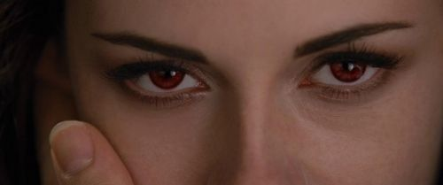

✩₊˚.⋆☾⋆⁺₊✧ Book Reviews & Where To Buy Them ✩₊˚.⋆☾⋆⁺₊✧
☆♡ Twilight ♡☆

The first Twilight book by Stephenie Meyer received mixed reviews upon its release in 2005. Critics praised its romantic and addictive storytelling, appealing particularly to young adult readers, while others criticized its writing style and the portrayal of the central relationship between Bella and Edward. Despite this, the novel became a massive commercial success, sparking a global phenomenon and leading to a bestselling series and blockbuster film adaptations. Readers were drawn to its blend of fantasy, romance, and suspense, making it a defining book of the 2000s YA genre.
"New Moon," the second installment in Stephenie Meyer's "Twilight" series, has elicited a range of responses from readers and critics. Some readers appreciate the deepened character development and the exploration of themes such as loss and resilience. However, others find the narrative's pacing slower compared to the first book, particularly during the middle sections. Despite these critiques, "New Moon" has maintained a strong fan base and continues to be a significant part of the "Twilight" saga.
"Eclipse," the third installment in Stephenie Meyer's "Twilight" series, has garnered a spectrum of reviews since its release. Many readers appreciate the novel's fast-paced plot and deeper character development, particularly the backstories of Rosalie and Jasper, which add depth to the vampire lore. However, some critics point out that the narrative is bogged down by excessive teenage drama and a protracted middle section, which may deter readers not already invested in the series. The portrayal of the love triangle among Bella, Edward, and Jacob has also been a focal point, with discussions about the dynamics and implications of their relationships. Despite these critiques, "Eclipse" achieved significant commercial success, selling over 150,000 copies on its first day and maintaining a strong presence on bestseller lists.